The Pup Bakery
E-commerve microsite design
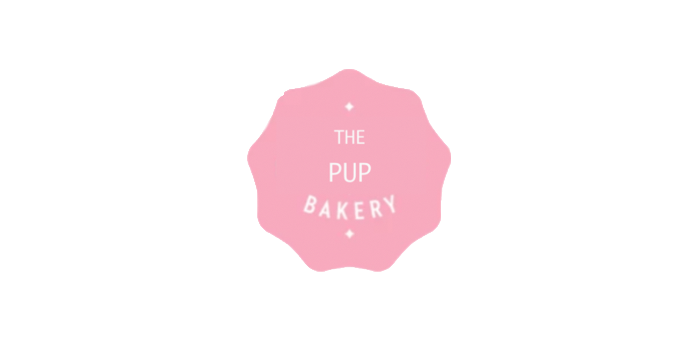
Agenda
Originally from Tennessee, Family owned 5 Daughters Bakery is in a
process of expanding their cronut, donut
and cookie business. They currently offer a
selection of baked goods for people but have
noticed there is no one in the East Coast offering
baked goods for dogs.
They have now asked me to
design them a microsite, focusing on baked dog
treats that fit their vision and brand.
This gave birth to The Pup Bakery,
a fake online website selling donuts,
cookies and biscuits for dogs.
Thank you for taking the time to check out my designs.
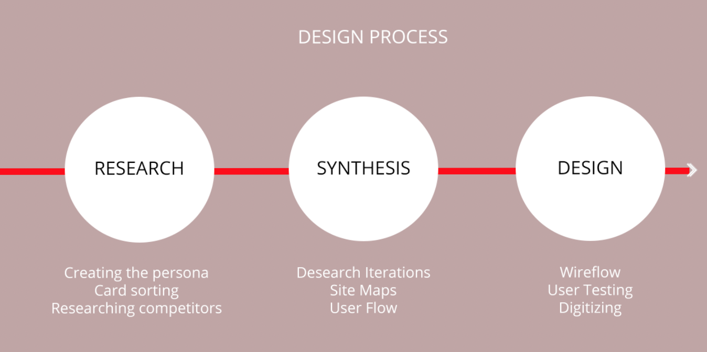
Research
Creating the persona. I started this project with creating “The Gifter” persona, Allie. She is planning a dog-friendly brunch for her friends and is having a hard time finding cute, brunch-style treats for her furry friends.
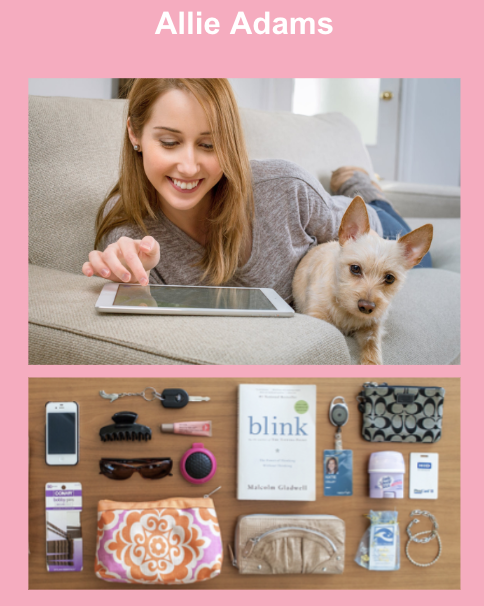Allie and her pup Biscuit seem like they're fun to hang out with, right? Lets check out some of Allie's expectations as an online shopper.
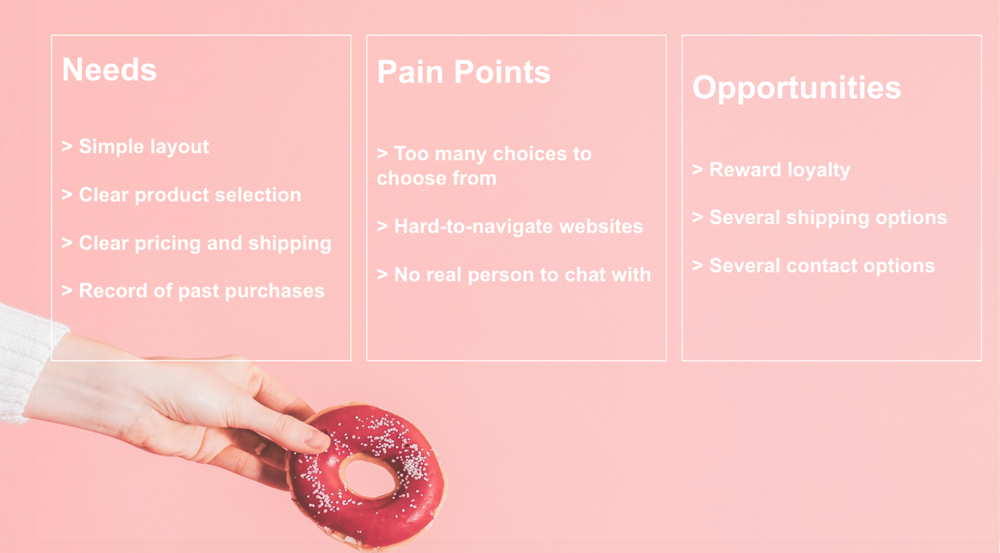From the above we can figure that Allie's problems are to find an easy-to-navigate, simple website with multiple shipping-, and contact-options.
That's a great place to start from and think about the best solutions we can offer for her. Let's begin our research, shall we?
Card Sorting
Open & Closed Card Sorting. I asked 6 of my classmates to help me getting started with my research. Their task was to sort printed
photos of delicious dounuts and cookies
into freely assigned groups in order to determine
possible product categories.
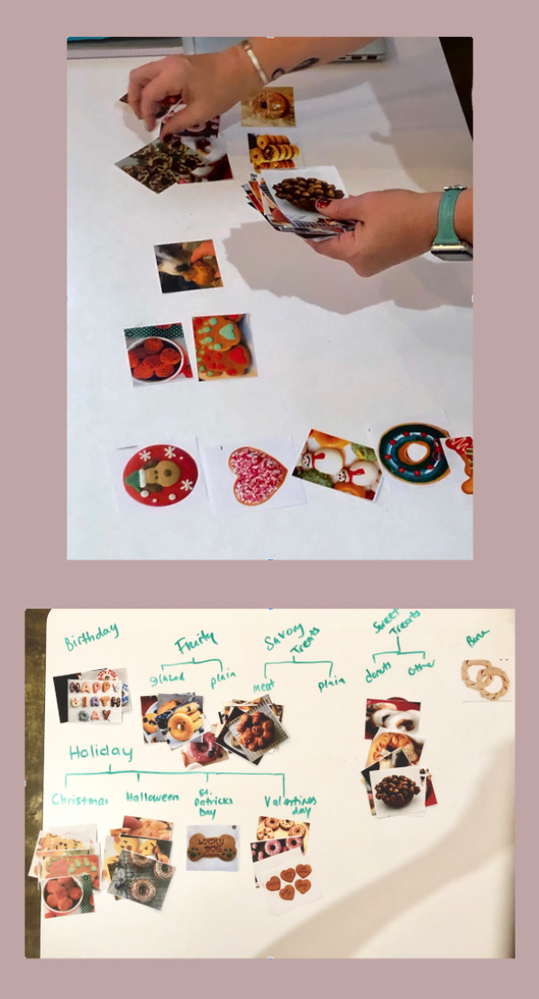
Through open card sorting (which simply means to sort cards however you'd like) I found out that most of the testers categorized the images according to sweet & savory donuts, cookies, seasonals and specials. In order to make sure the categories were legit, I asked 3 more of my classmates to sort the cards into the earlier determined groups. I have found my sitemap navigation!
Competitive Analysis
In order to understand Allie's
needs and pain points better, I went ahead and
researched several competitors sites providing
similar products to the future Pup Bakery.
My main focus wasn't on the products these competitors sell,
but on the different navigational elements Alli is looking for.
These elements are clean design, clear product selection, way to order online and easy way to contact store.
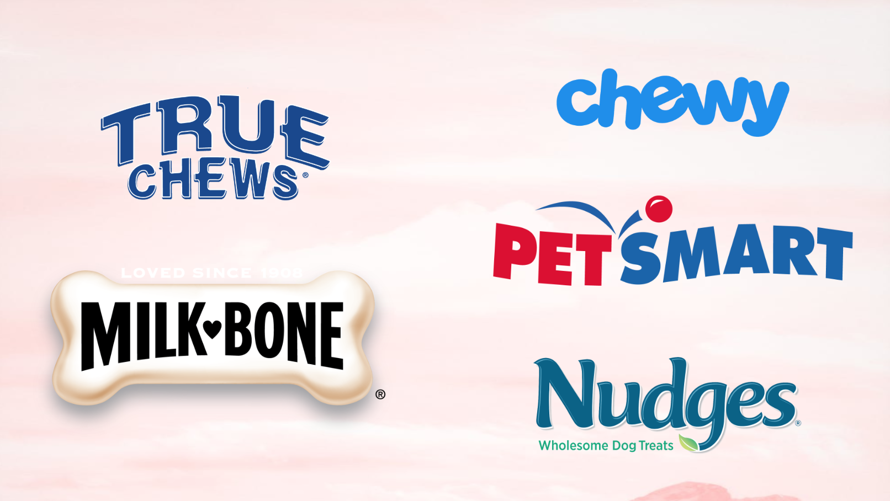
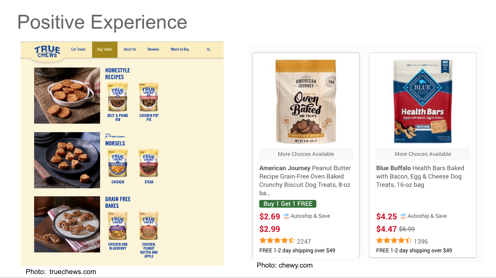
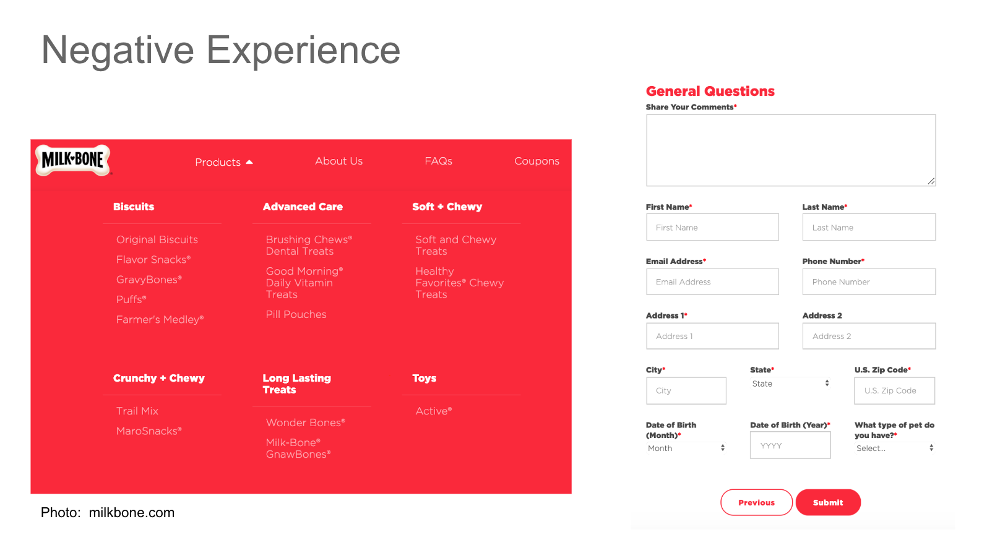
Synthesis
Sitemap
In order to better understand my card sorting results, I created a sitemap which helped me to visually see how easy or complicated navigating the main elements on the website would be.
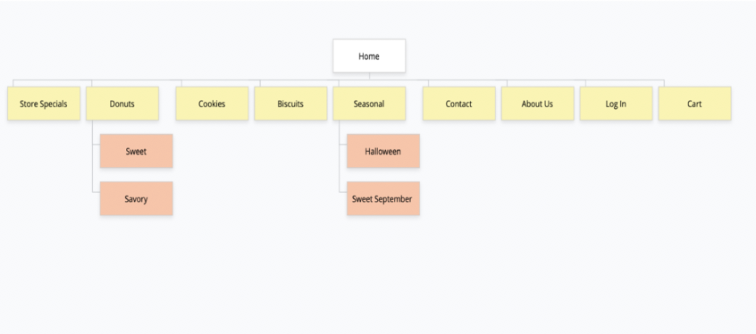
Oh! I'm not supposed to add secondary navigation into my sitemap? Lets try again.
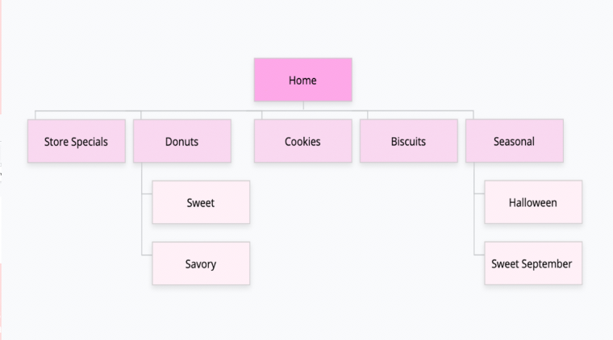That looks better.
User Flow
To be honest, it took a while for it to flow. I spent a long time perfecting my user flow and sketched several options before finding the best path for my persona
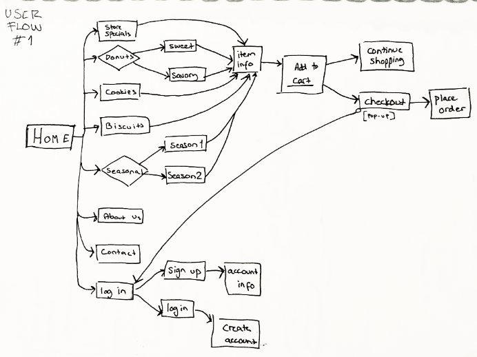
The above sketch is one of the first ones I did and my wireflows have definitely gotten better since this project.
You might be wondering why some of the rectangles are different color below. The green color indicates Allie's happy path; a path she'd most likely take when navigating throught ordering from The Pup Bakery-website.
Design
Sketching
Outside from brainstorming with others, this is the best part of UX; creating pretty things based on all the hard research work you've just done. It's like eating caramel swirl ice-cream after a hearthy dinner; tasty for sure but gives you a nasty brainfreeze.
During sketching these wireframes my
primary focus was on keeping it simple
in order to allow the user (Allie) to effortlessly
navigate through her each step.
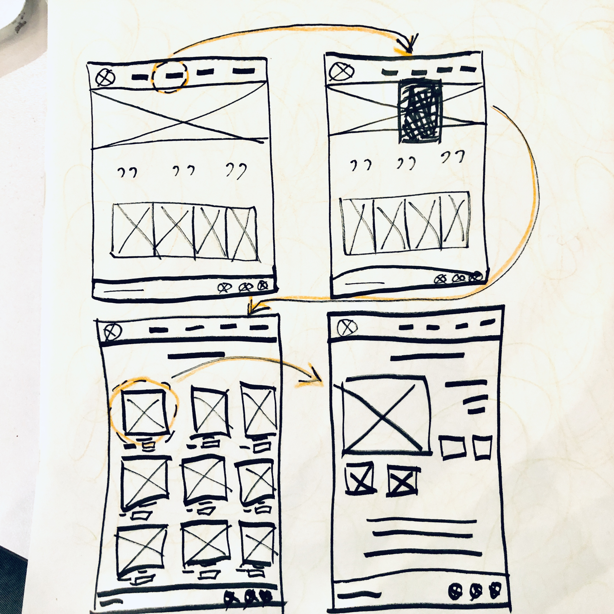
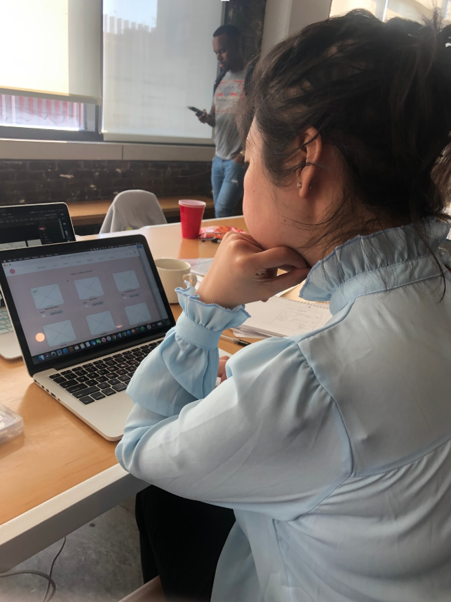
After couple of iterations, my sketches turned into their digitized form with a little help from Adobe XD. I'm sure Allie would have loved this website design but just to be sure, I asked some of my classmates to test the first iteration for me.
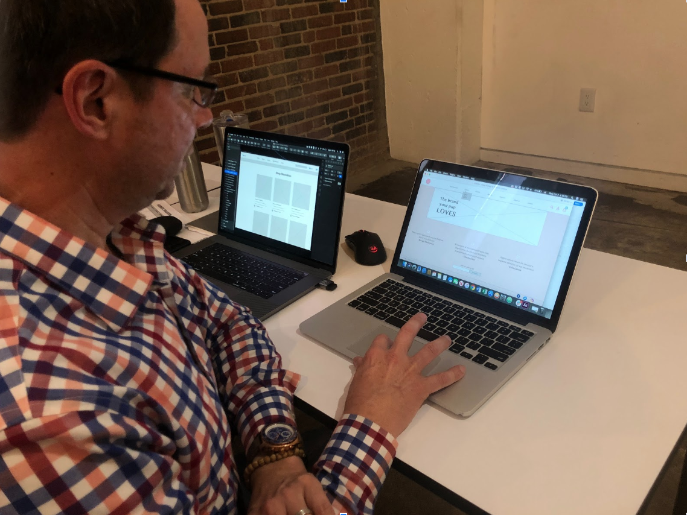Nice, but can you add "popular items"-option as well?
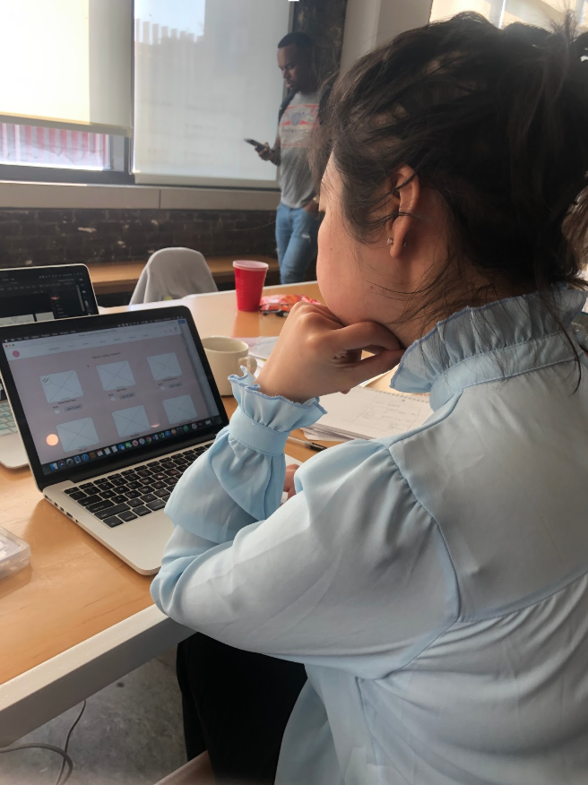
I really like your website. Where is the contact-page?
Right! I forgot to add a contact-page.. this is why iterations are important. Lets go ahead and add some more navigational elements and try again.

Better!
I did some more testing in order to perfect my wireframe and allow Allie to navigate around the page multiple different ways.
After couple of successful test drives, the prototype was finally ready.
Finnished
See what I did there? Finnish-ed.
No?
Fine.
Our e-commerce microsite design is now ready. If I would continue with this design, I would first add images and tweet some of the design elements before handing it over to the developer: me.